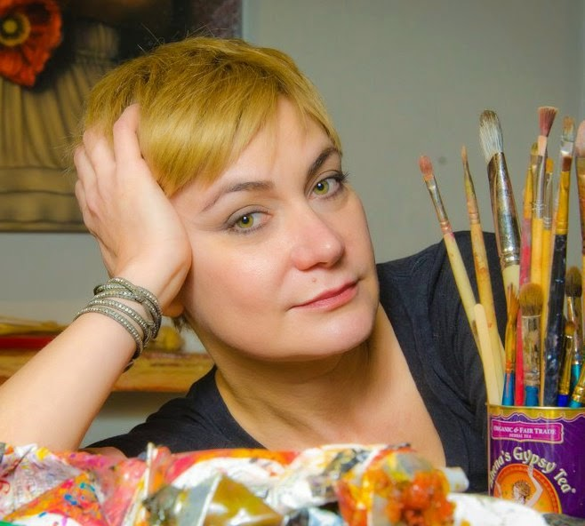

1966
Larissa Morais was born and raised in Moscow.
She has been painting since she was in high school, however her first love was not the brush but the keys of a piano.
The replacement of a teacher changed her vision from music and into the world of art.
While helping her sister one afternoon with her art homework something sparked her passion for painting and perhaps she stumbled upon her destiny.
- BFA, Moscow, Theatrical Arts Institute
- Graduate School of Restoration and Conservation
- Sculpture courses at Serguey Gaydukov Studio
- Extensive course on Copying Techniques at the Pushkin Museum of Fine Arts
EXHIBITIONS
2022 Lahaina Galleries - Group
2021 Lahaina Galleries, - Group
2020 A Gallery, Izmir, Turkey - Group
2020 Lahaina Galleries - Group
2019 Lahaina Galleries - Group
2018 Lahaina Galleries, Lahaina, Hawaii - Group
2017 Lahaina Galleries, Lahaina, Hawaii - Group
2016 Lahaina Galleries, Lahaina, Hawaii - Group
2015 Lahaina Galleries, Wailea, Hawaii - Group
2014 Lahaina Galleries, Newport Beach, CA - Group
2015 Lahaina Galleries, Maui, Hawaii - Group
2014 Lahaina Galleries, Newport Beach, CA - Group
2012 Larissa Morais Studio, Orange, CA - Solo
2012 The Dina Collection, Beverly Hills, CA - Group
2012 Studio Gallery at Bayside Restaurant, Newport Beach, CA - Solo
2012 Studio Gallery at Bistango Restaurant, Irvine, CA - Group
2011 Bowers Museum, Santa Ana, CA., Russian White Nights Event
2011 Christopher Morgan Galleries, Palm Desert, CA - Solo
2010 Christopher Morgan Galleries, Palm Desert, CA - Solo
2010 Glass Garage Gallery, West Hollywood, CA - Group
2009 Miranda Galleries, Laguna Beach, CA - Two Men Show
2009 Christopher Morgan Galleries, Palm Desert, CA - Solo
2008 Fendi Casa, West Hollywood, CA - Group
2008 Christopher Morgan Galleries, Palm Desert, CA - Solo
2008 Glass Garage Gallery, West Hollywood, CA - Group
2007 Zantman Art Galleries, Palm Desert, CA - Solo
2007 Evan Lurie Gallery, Carmel, IN - Group
2007 Lurie Fine Art Galleries, Miami, FL - Group
2006 Glass Garage Gallery, West Hollywood, CA - Solo
2005 SOHO Gallery, Studio City, CA - Group
2005 Lurie Fine Art Galleries, Boca Raton, FL - Solo
2004 SOHO Gallery, Studio City, CA - Solo
2004 RDS Gallery, S. Hampton, FL - Solo
2004 Kent Gallery, Key West, FL - Group
2004 Lurie Fine Art Galleries, Boca Raton, FL - Solo
2003 SOHO Gallery, Studio City, CA - Solo
2003 SOHO Gallery, Studio City, CA - Group
2003 Glass Garage Gallery, West Hollywood, CA - Group
2002 SOHO Gallery, Studio City, CA - Group
2002 Glass Garage Gallery, West Hollywood, CA - Solo
2002 Glass Garage Gallery, West Hollywood, CA - Group
2001 SOHO Gallery, Studio City, CA - Group
1993 Hammer Trade Center, Moscow, Russia - Solo
1993 El Paseo Art Gallery, Mogan, Spain - Group
1992 Church Art Gallery, Fremantle, Australia - Group
1991 Mars Gallery, Moscow, Russia - Solo
1989 Mars Gallery, Moscow, Russia - Solo
1988 Mars Gallery, Moscow, Russia - Group
PRIVATE COLLECTIONS
I.Roubal MD, USA
P.Falchi, USA
R.Collins, Brazil
A.Bubion, USA
Christian Galindo, USA
Rosana Francoli, Italy
Lucien Arkas, Izmir, Turkey
CORPORATE COLLECTIONS
Brazilian Embassy, Moscow, Russia
Sovintel, Moscow, Russia
Empresa Zanini, Sao Paulo, Brazil
Larissa became a graduate from BFA, Moscow Theatrical Arts Institute, and attended the Graduate School of Restoration and conservation where throughout the years she took courses in conservation and restoration of 15th-and 16th-century paintings. "when you restore a painting, you can paint your own strokes into history". Larissa is influenced by everything in her life. Her brush creates a realistic impression as if it couldn't possibly be anything but a photo. She views her subject matter as architecture. She sees the subject and presents it in a way that is usually not seen from the naked eye. Her favorite subject to paint is the human figure from which she brings a reality to the paintings where attention to detail is as strong as attention to the character of the model. In her artwork, we are in the company of beautiful men and women, intimately poised and positioned. All her artwork is conceived from a sketch, which she later paints onto a large black canvas. Her delicate technique is with very thin layers of oil paint, while using the black background for shadowing. She captures every detail of her subject. For her it is all there, she just uncovers it. Her favorite painting is always the one she is working on and the most difficult thing is to part with her art. She usually falls in love while painting, and she describes it as "it is always bittersweet when parting with a painting however it's always validating". As Ralph Waldo Emerson once said, "the love of beauty is taste, the creation of beauty is art". Larissa's paintings capture true beauty, they are moving and intoxication, filled with such lush imagery and sensuality. Oscar Wild said, " every portrait that is painted with feeling is portrait of the artist, not the sitter". Larissa's gift of bringing reality to a bare canvas is a true testament of what a great artist truly is.